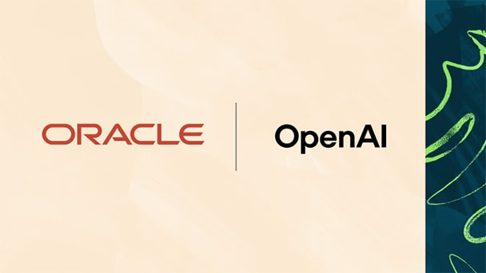
Oracle本次OpenAI合作公告的官方配图。
Oracle拟接入ChatGPT处理业务
来源: OpenAI / Oracle · 2026-10-27 15:00（台北） · 原文链接
OpenAI与Oracle扩展合作，Oracle正在开发AI Workspace，拟把财务、采购、规划等应用和数据带入ChatGPT，在机构权限与批准范围内完成业务任务。Oracle同时介绍App Composer、安全检测和面向小企业的组合产品；这些产品仍包含开发与路线图内容。已明确可用的一项是美国客户经Oracle Marketplace采购OpenAI API、Codex与ChatGPT Work，并使用符合条件的Oracle Universal Credits。
Janet 锐评：
查清一笔采购为什么发生，往往要来回打开几个业务系统。把这些入口放进同一对话里确实省事，前提是对话继承了每个系统的权限，而不只是记住了一次登录。Workspace还在开发，Marketplace采购则是眼前能做的事；合作公告把两种成熟度放在一起，读者也得把预期拆开。真正省下的应是查找与搬运，不是财务批准本身。
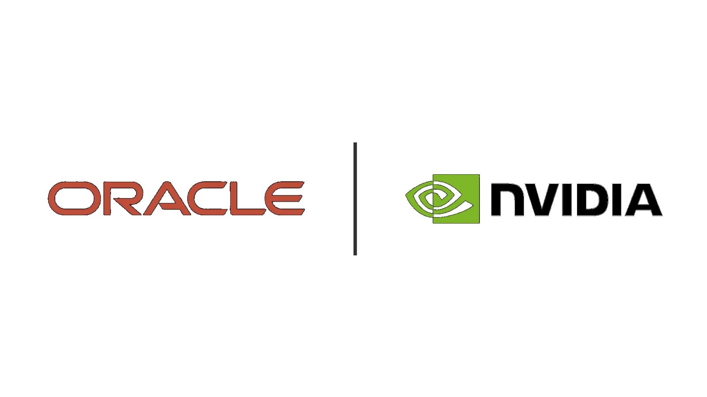
NVIDIA本次OCI合作公告官方配图，非新机房竣工现场。
NVIDIA扩展OCI算力至多吉瓦
来源: NVIDIA / Oracle · 2026-10-27（原文仅日期） · 原文链接
NVIDIA与Oracle宣布，Vera Rubin NVL72系统及Vera CPU已在OCI正式可用，同时计划把Superclusters扩至多吉瓦规模，后续引入八GPU的HGX Rubin NVL8配置。CPU与GPU资源可独立扩缩，分别承担工具执行、代码测试和模型推理。多吉瓦是扩建计划，不是本次公告确认全部已通电的容量；厂商也没有给出统一的客户成本降幅。
Janet 锐评：
模型等待工具跑完时，昂贵的GPU也可能一起闲着。Vera CPU的角色是接住这段夹在模型调用之间的工作；按不同节奏分配CPU与GPU，比只往机房堆更多卡更接近利用率问题。
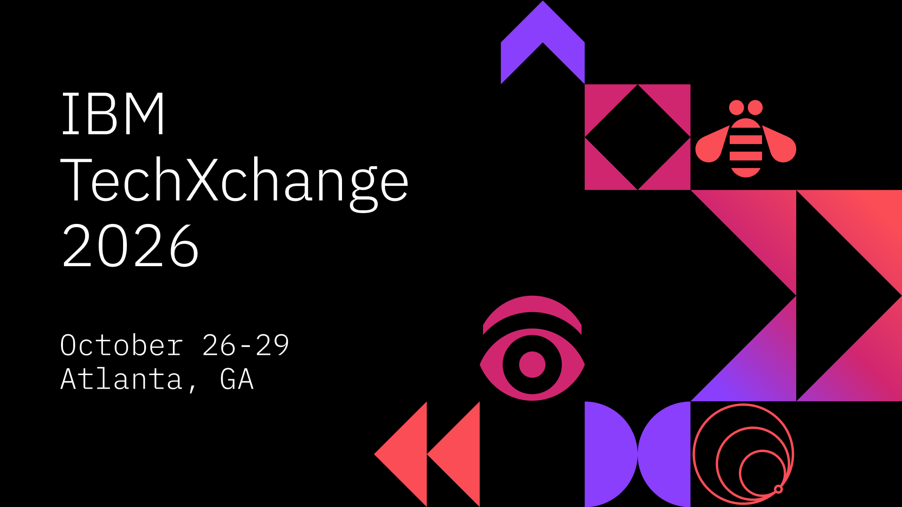
本次TechXchange发布活动配图，非产品界面。
IBM给智能体发身份与短期凭证
来源: IBM · 2026-10-27（原文仅日期） · 原文链接
IBM在TechXchange公布Agent Identity、Vault 2.2及watsonx Orchestrate管理能力：为智能体记录所有者与授权，签发短期凭证，并在越权时撤销访问。Agent Identity、Vault 2.2和Evaluate已正式可用，自动Discover与Contain仍是技术预览，Secure Hub为公开预览；不能将整套跨平台发现、沙箱和停止开关统称为已全面交付。
Janet 锐评：
有名字的智能体不等于有无限权限的员工。短期凭证能把一项任务的授权寿命缩短，但发现影子智能体和隔离失控任务仍在预览；产品清单里最有用的信息，正是这几个并不同步的状态。
同一采购公告采用的美国GSA总部资料照，非签约现场。
Anthropic给政府采购打六折
来源: Anthropic / GSA · 2026-10-27（原文仅日期） · 原文链接
Anthropic与美国GSA扩大协议，为Claude Enterprise、Claude for Government及Claude API提供40%折扣，并覆盖州、地方、部落和领地政府，不设最低消费承诺。直接采购已覆盖；Anthropic称云渠道将在未来数月落实，GSA概述则列有主要云平台，具体渠道状态需逐项核对。公司估算可节省10亿美元，这不是已实现的财政节支，不同产品的政府安全授权级别也不相同。
Janet 锐评：
没有最低消费额，对预算小、采购慢的部门很实在。六折的单价仍不等于六折的项目总成本：资料整理、权限配置、人员培训与复核都还要付钱，云渠道的折扣也得等到真正接通。
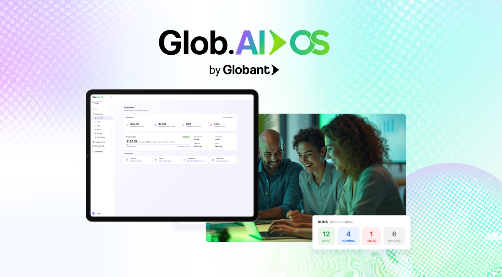
Glob.AI OS本次发布配图。
Globant按结果卖AI服务与管控
来源: Globant · 2026-10-27（原文仅日期） · 原文链接
Globant推出Glob.AI OS，整合模型路由、企业数据、智能体执行与预算记录，称可连接25家以上供应商的320多个模型，以SaaS或客户自有云运行。它与有人监督的AI Pods组合，按结果或消耗而非工时、席位收费。公告中的最高七倍现代化提速与三倍产品探索提速，是公司披露的既有项目表现，非本次平台的普遍保证。
Janet 锐评：
按结果付钱听起来比按人头爽快，难点在于谁定义结果。迁移完一个系统、生成一份报告和让业务连续运行，并不是同一种验收；合同里那条完成条件，会比能接多少模型更决定双方是否满意。
Genie 4官方演示配图；生成场景，不是真实摄影记录。
Genie 4生成可交互声画世界
来源: Google DeepMind · 2026-10-28 00:13（台北） · 原文链接
Google DeepMind推出Genie 4研究预览，可用文本实时改变场景，并同步生成环境声音、音乐与人物对话；Gemini模型参与规划和跟踪多步事件。首批面向可信测试者，Google AI Ultra用户及Gemini API、AI Studio早期伙伴仍待后续开放。官方承认长时间运行会出现物体、视觉细节与空间一致性漂移，复杂物理、音频准确性和清晰文字仍待改进；声画包含SynthID水印。
Janet 锐评：
预演一场戏时，能边走位边改天气、对白和镜头，比反复生成互不相干的小片段更有吸引力。可导演需要的不只是好看的一次：同一扇门、同一个人、同一条因果能否在下一次操作后保持，才决定它能接到哪段制作流程。现在适合想象的是可互动草稿，不是已交付的游戏引擎，也不是可靠的物理实验替身。
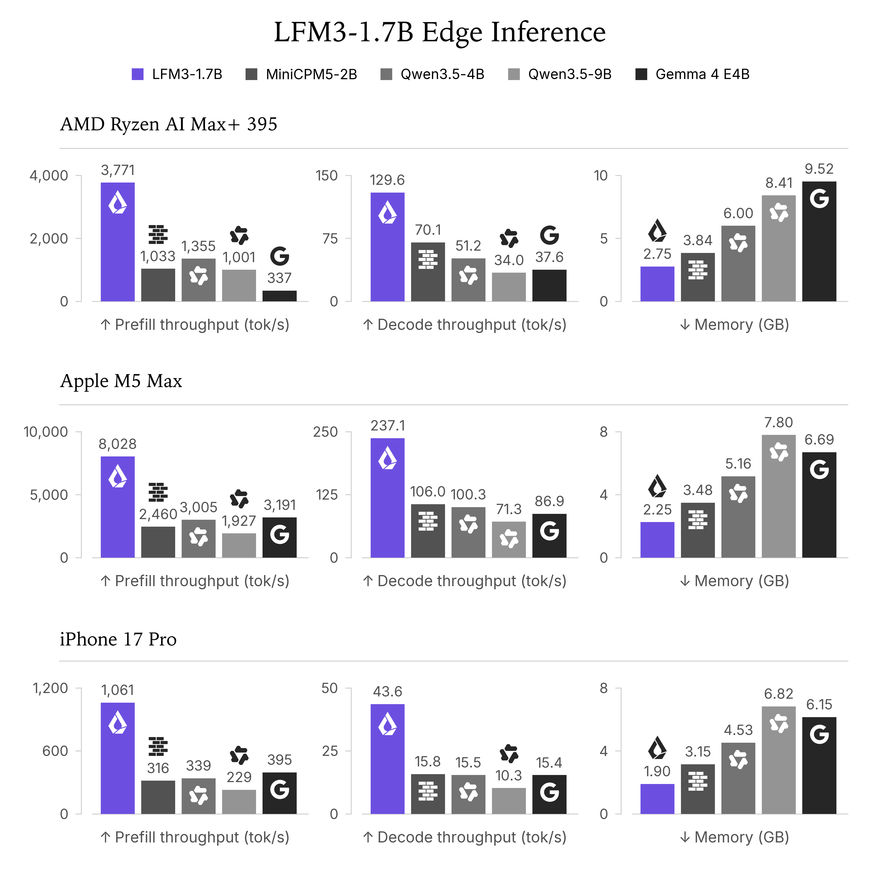
LFM3官方端侧推理比较图，数据为厂商测试。
LFM3用六款小模型覆盖多模态
来源: Liquid AI · 2026-10-27（原文仅日期） · 原文链接
Liquid AI发布LFM3家族，以22万亿token预训练的共享骨干衍生文本、视觉、音频、全模态及两款决策模型，均在约2B参数级别。LFM3-1.7B文本版提供256K上下文，官方称四位精度下模型约占1GB；长上下文缓存另占内存。权重按LFM Open License v1.0开放，跑分由团队自报；文本模型卡明确不推荐用于智能体编程或复杂多步推理。
Janet 锐评：
把文本、声音和图像拆成可选的小模型，给设备开发者的选择比一款万能助手更具体。1GB只是量化模型的约数，不能连上下文缓存、视觉输入和应用内存一起抹掉。模型卡把不擅长复杂推理写出来尤其重要：它可以接收邮件分类或本地工具任务，但小体积不会自动换来长程任务的稳定性。专用模型的购买理由，应落在某一种重复工作上。
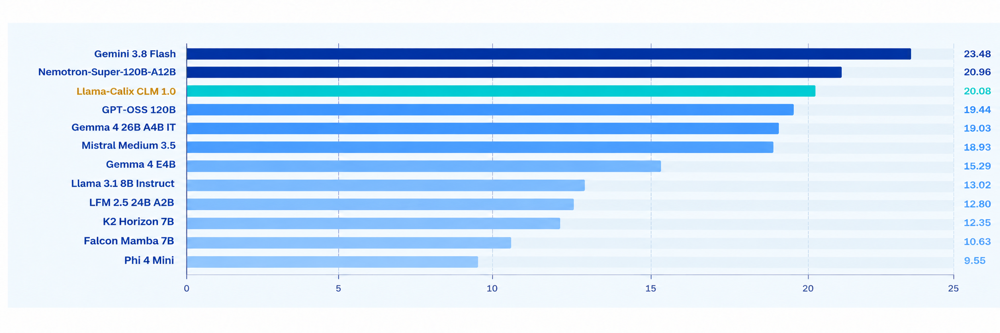
Calix模型卡评测图，成绩为发布者自报。
Calix开放通信行业微调模型
来源: Calix AI Labs · 2026-10-27 21:05（台北） · 原文链接
Calix正式发布Llama-Calix CLM 1.0，基于Llama 3.1 8B进行通信与网络领域的持续预训练、六组专家LoRA训练和蒸馏，并非从零训练的新通用基础模型。合并权重与GGUF已公开，沿用Llama 3.1许可；覆盖路由、宽带、Wi-Fi和Linux诊断。公开模型不包括计划于2027年提供的专有Calix Gems，模型卡也未专门验证长上下文表现。
Janet 锐评：
运营商想知道的常是某条路由为什么断了，而非模型能否写一首诗。公开一个可下载的行业起点有用，真正接管用户家里的故障处理还要等专有产品；两者之间仍隔着设备状态、具体命令和误操作责任。
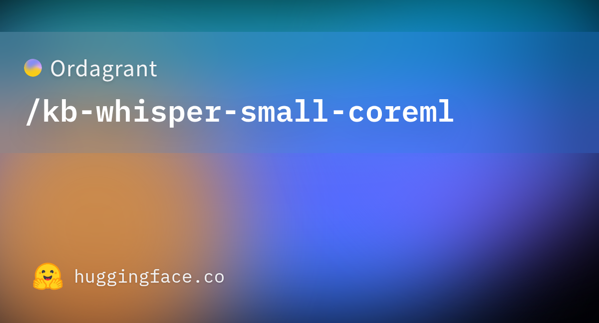
本次独立转换仓库的模型信息卡。
独立转换将瑞典语识别带上Mac
来源: Hugging Face · Ordagrant · 2026-10-28 07:49（台北） · 原文链接
Ordagrant上传KB-Whisper small的独立Core ML转换版，源头是KBLab对Whisper small的瑞典语微调，并非OpenAI或KBLab新基础模型。发布文件包含音频编码器、解码器和频谱组件，转换记录给出源模型固定版本及八位量化配方，面向WhisperKit使用。仓库按Apache 2.0发布并保留源组件许可，但没有提供独立识别准确率或通用实时速度测试。
Janet 锐评：
一门语言的字幕工具，常常靠这类不起眼的格式桥梁进入剪辑现场。配方和版本号让别人有机会复现；能否正确识别人名、口音和多人抢话，仍由实际录音决定，而不是由Core ML扩展名决定。
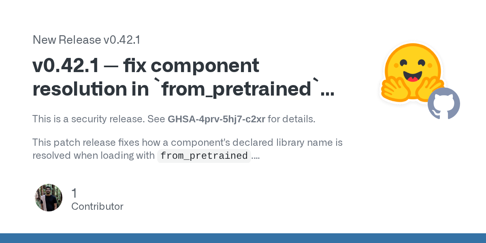
Diffusers 0.42.1官方安全发布记录。
Diffusers封堵本地模型加载漏洞
来源: GitHub · Hugging Face · 2026-10-27 15:41（台北） · 原文链接
Diffusers发布0.42.1安全修复，调整from_pretrained加载时对组件声明库名的解析，并补充找不到类时的错误信息。关联公告将0.42.0及以前列为受影响版本：当下载的仓库目录可从Python模块路径导入时，恶意配置可能触发代码执行，即使trust_remote_code=False。公告同时说明，冷启动的Hub模型ID加载不满足这一前提，不能写成所有下载模型都会执行攻击代码。
Janet 锐评：
关掉远程代码并不保证本地配置就只是数据。对经常下载社区流水线的创作者，加载之前执行了什么，和最后生成了什么一样重要。补丁把一个具体入口堵上，不等于给任意模型仓库发了安全证书。
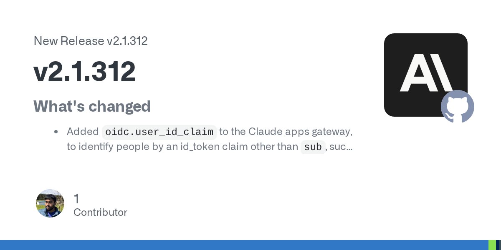
Claude Code本次版本说明。
Claude Code限制大文件覆盖写入
来源: GitHub · Anthropic · 2026-10-28 04:24（台北） · 原文链接
Claude Code 2.1.312修复只读到大型CLAUDE.md、规则或引用文件开头后就覆盖整份文件的问题，Write现在要求先完整读取或改为局部编辑。版本也修复VS Code登录后组织政策未继续拉取、子目录技能发现和旧推送事件导致审查过时提交等问题。以上是工具行为修正，不是对所有文件操作绝不会丢内容的保证。
Janet 锐评：
一份规则文件往往比一次任务活得久，读了开头就整份重写，损失会延续到后面的每次运行。这个修补让“看过多少”与“可以改多少”重新对应，像给编辑器补上一条朴素但必要的职业纪律。
NVIDIA该C-BRAIN研究进展报道配图。
C-BRAIN用未发表数据做科研助手
来源: NVIDIA · 2026-10-27 23:00（台北） · 原文链接
NVIDIA介绍C-BRAIN的最新研究工具：OpenScientist可提出假设并运行分析，InsightEngine把文献、数据和知识图谱中的主张交回证据检查。联盟于2025年成立，当前结合本地64张GPU与Azure节点，以集中及联邦方式使用未发表、阴性及受治理的数据。这是当天新研究进展报道，不是联盟刚成立；低于10美元、数分钟完成分析的案例数字也不等于已发现有效的阿尔茨海默病疗法。
Janet 锐评：
阴性结果很少登上头条，却可能阻止下一个实验室重走同一条死路。C-BRAIN试图接通这部分资料，贡献首先在研究组织方式；把资料找全和把疾病治好之间，仍有很长的实验距离。
Anthropic本次药物研究进展文章配图；非临床疗效证明。
Anthropic公开六组药物研究进展
来源: Anthropic · 2026-10-27（原文仅日期） · 原文链接
Anthropic披露与六家机构的药物开发合作，并称已收购单人公司Mithril Medicine。Generate科学家借Claude Code设计的一个组件约缩短70%，实验中细胞受体表达约增十倍；Enveda在1061页文件测试中找全人工已发现的11项问题，并额外提示7项。数字来自公司及合作方研究，绝大多数项目仍属临床前阶段；Mithril候选药物最早2028年底进入人体试验也有条件，并未证明临床疗效。
Janet 锐评：
十倍受体表达很容易被读成十倍治疗效果，二者却不是同一项指标。这里更可复述的进展，是研究者拿着具体设计回到实验台，或用既有文件检查模型到底漏了什么。药物研发有许多这种窄而真实的进步；它们能省时间、改变下一步实验，却不能直接跳过毒性、剂量和人体试验。病人的等待值得认真对待，也因此不宜提前写成治愈。
今日核心预测
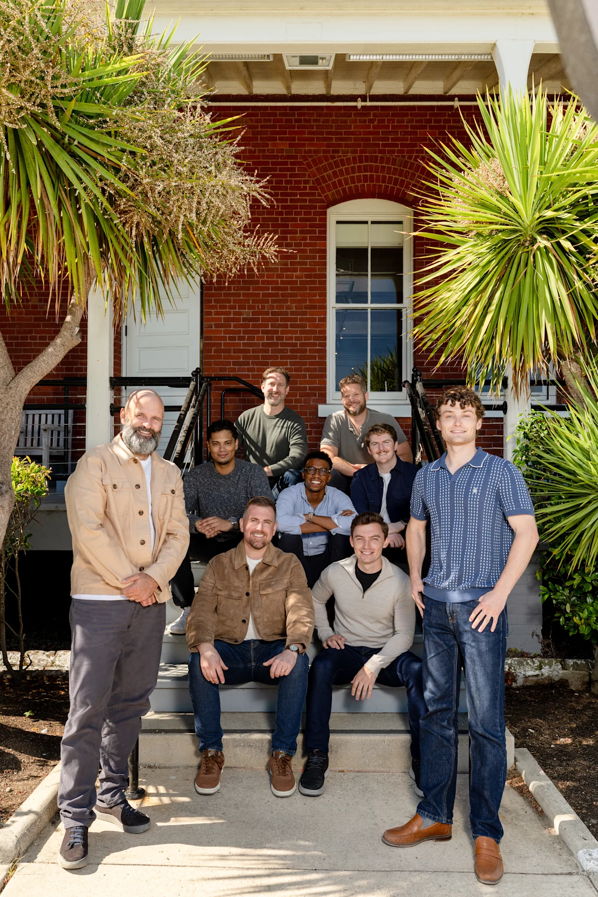
同轮融资报道中的General Compute团队照片；图片由公司提供。
General Compute融资一亿美元建推理云
来源: General Compute · 2026-10-27（原文仅日期） · 原文链接
General Compute宣布完成1亿美元A轮融资，由Blackbird与Abstract共同领投，构建使用Cerebras、SambaNova、Positron AI及GPU的推理云。公司提供独占裸金属或保证每秒token数的服务，并称首批主要部署将于2027年第一季度上线，规划管线超过50MW。本轮股权融资与此前Upper90的4亿美元债务额度分别存在，不能相加后都当作新到账资金或已交付产能。
Janet 锐评：
推理云不只是在转卖显卡，也在出售一个稳定的响应承诺。换用不同芯片可能腾出价格和速度空间，但客户交给它的是持续服务：设备迟到、机房未准备好或需求变动，都会落在同一张合同上。首批主要部署还在明年，今天融资买到的是履约准备，而非现成的五十兆瓦。硬件选择多了是好事，利用率和现金流仍然不会因此自动成立。
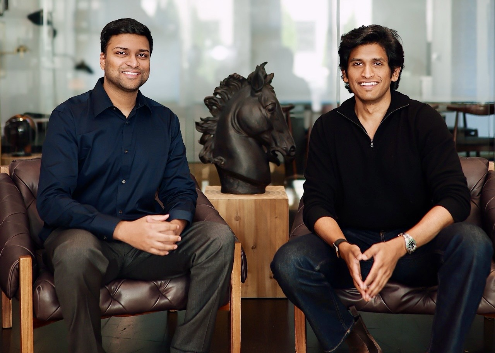
公司融资公告中的两位联合创始人。
Hyphenate获四千五百万美元融资
来源: Hyphenate / GlobeNewswire · 2026-10-27 21:00（台北） · 原文链接
财务自动化公司Hyphenate宣布4500万美元A轮，由Nexus Venture Partners领投，B Capital及既有投资者参与，累计融资5400万美元。公司由Maximor更名，业务覆盖现金核对、销售订单、开票和子账处理；声称一年收入增86倍、客户增11倍，均为公司口径。早期聚合简报写4000万美元，本期以公司当日正式公告为准，不把增长倍数当作经审计收入。
Janet 锐评：
对账做对一次，财务团队才可能放心多交一个模块。Hyphenate描述的扩张顺序比八十六倍更有信息量：信任是按具体任务积累的，小起点上的增长倍数则无法独自说明业务规模。
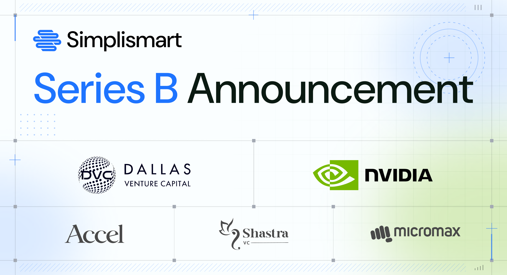
Simplismart本次B轮融资官方配图。
Simplismart融资一千四百万做调度
来源: Simplismart · 2026-10-27（原文仅日期） · 原文链接
Simplismart宣布1400万美元B轮，由Dallas Venture Capital领投，NVIDIA、Accel等参与。公司强调自己建设推理引擎与编排软件，而非购买GPU机队，并计划在数据驻留和延迟约束下连接不同地区的供需。其官网自报半年年化收入运行率增14倍；具体客户成本与延迟改善来自公司案例，不是所有负载的统一结果，跨区域动态调度也仍是建设方向。
Janet 锐评：
一边的GPU闲着，另一边的用户排队，并不代表把任务搬过去就能解决。模型是否已经加载、网络往返和资料能否跨境，都可能吃掉便宜算力的好处。Simplismart押的是把这些条件同时满足的软件。